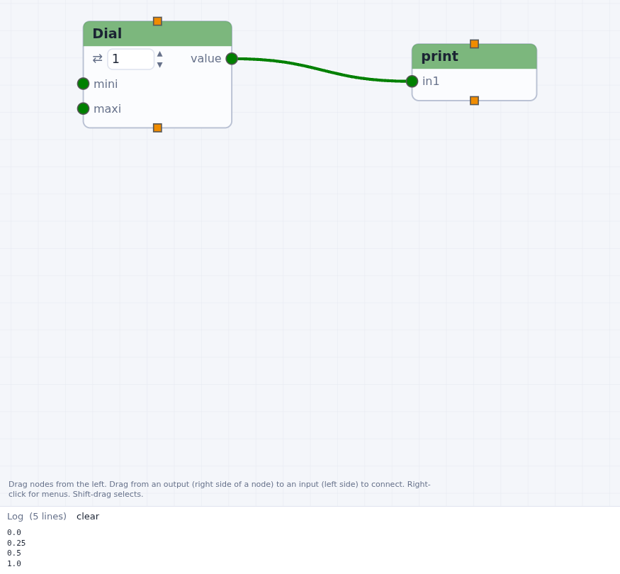
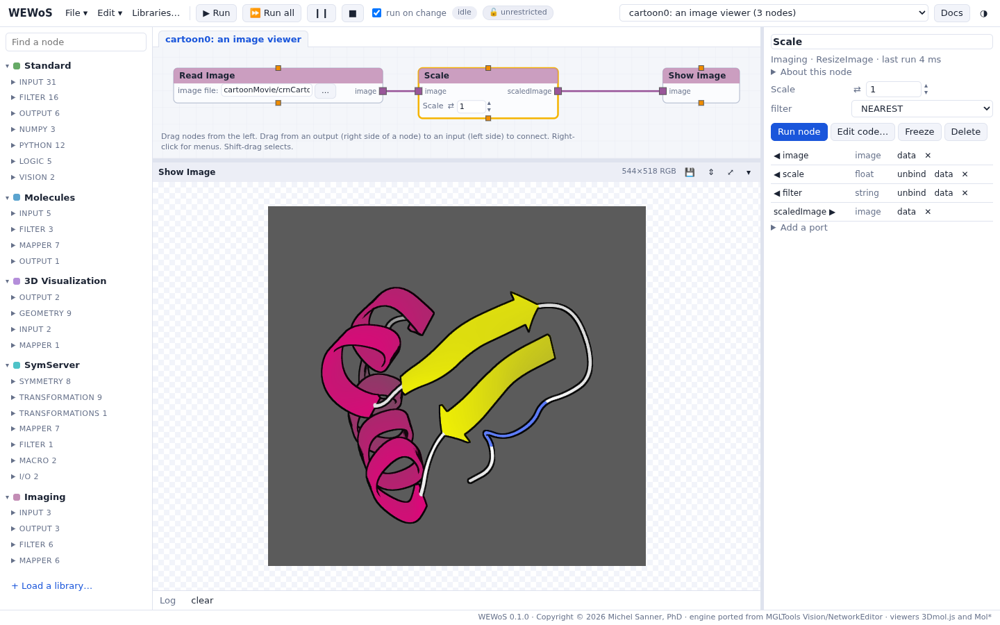
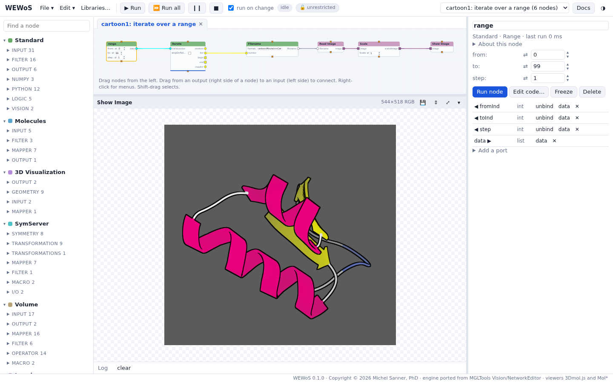
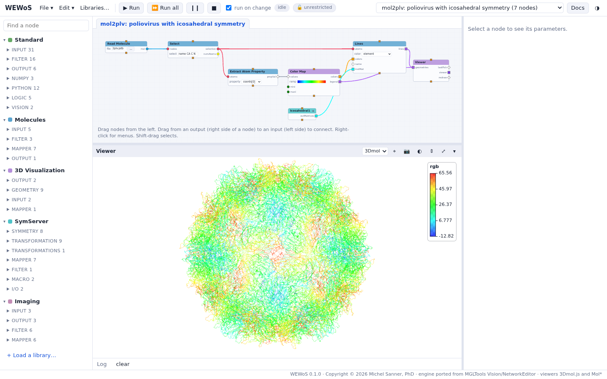
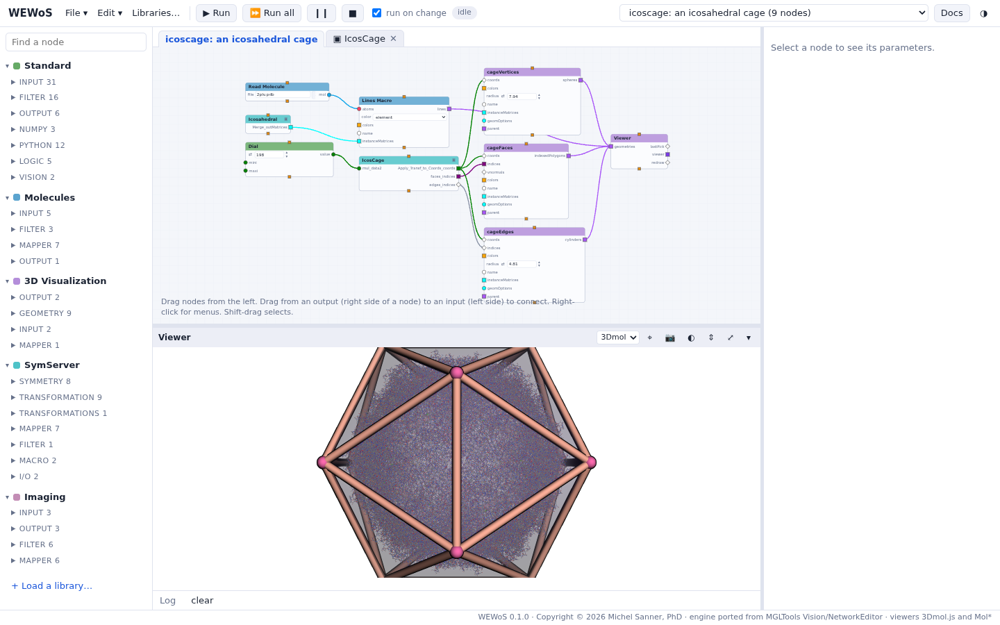
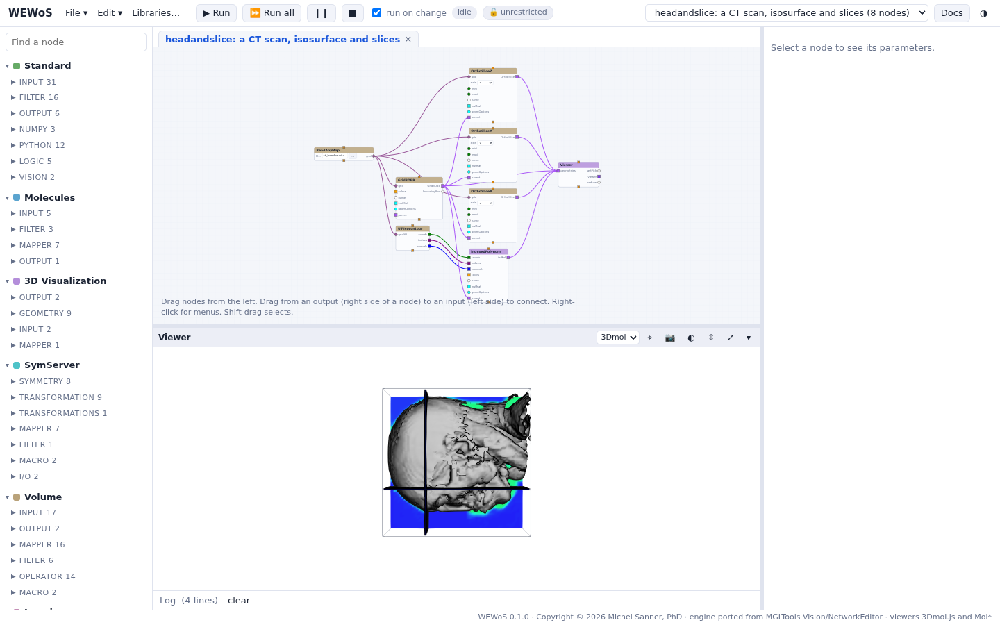

About the tutorials
Vision's tutorial, followed step by step in WEWoS: from a dial and a print node to a virus capsid, a CT scan and an electron density map.
These tutorials follow the Vision tutorial of MGLTools 1.5.3, written by Michel Sanner and Guillaume Vareille in 2008 and taught at the 2008 summer school in San Diego (The Vision Environment and Advanced Workflow Management, Guillaume Vareille and Michel Sanner). Its data and its saved networks come with WEWoS, so each step can be checked against the network the tutorial saved at that point.
How to follow them
- Open File > Open an example…, group Vision tutorial (MGLTools 1.5.3),
and choose start here (an empty network with the tutorial data). This opens an empty network
whose folder holds the tutorial's files:
cartoonMovie/(101 frames of a cartoon of crambin turning),2plv.pdb(poliovirus),nomegav1AS.pdb,ct_head.rawiv(a CT scan),lig.ccp4andnwv2.ccp4(density maps). - Build the network as the page describes. File names are relative to the network's folder, as they were to the tutorial's folder in Vision.
- Where the page says Checkpoint cartoon0b, the group has the network the tutorial saved at that point: open it to compare, or to go on from there.
The tutorials

Your first network A dial, a print node, the run buttons, menus and data.
An image viewer Read, scale and show an image; a contour filter.
Playing a series of images Unbinding widgets, file names, iterate, file lists, editing code. Indexing a list; macros
A thumbwheel browses the frames; three nodes become a macro.
Indexing a list; macros
A thumbwheel browses the frames; three nodes become a macro.

A virus capsid from one protomer A molecule, a color map, and 60 icosahedral copies.
An icosahedral cage The cage of the capsid's symmetry, sized with a dial.
Volumes Isosurfaces, slices, a box cut and a molecule blurred into a map.What changes from Vision
| in Vision | in WEWoS |
|---|---|
| inputs on top of a node, outputs at the bottom; data flows down | inputs on the left, outputs on the right; data flows from left to right |
| move a node with the middle button | drag it with the left button |
| left-drag a rectangle to select | Shift-drag (a plain drag pans the network) |
| the parameter panel, opened from the node's menu | the parameter column on the right, for the selected node |
| the immediate mode (the tap icon, Ctrl-F) | run on change |
| the green and yellow lightning buttons | Run and Run all |
| a DejaVu window per Viewer node; a Tk window per Show Image | panels in the row under the network |
| loading a library from the toolbar | Libraries… |
| the user panel (Edit > Build user panel), to make a network an application | not ported; the parameter column holds the widgets you move out of the nodes |
| saving a node's source to a user library from its menu | write the node in a library file (see Writing your own nodes) |
Not ported: the tutorial's last three networks (hemoglobin, msmsGen,
runningsurface) drive PMV, the Python Molecule Viewer, which is not part of WEWoS. They import,
but their PMV nodes do not run.